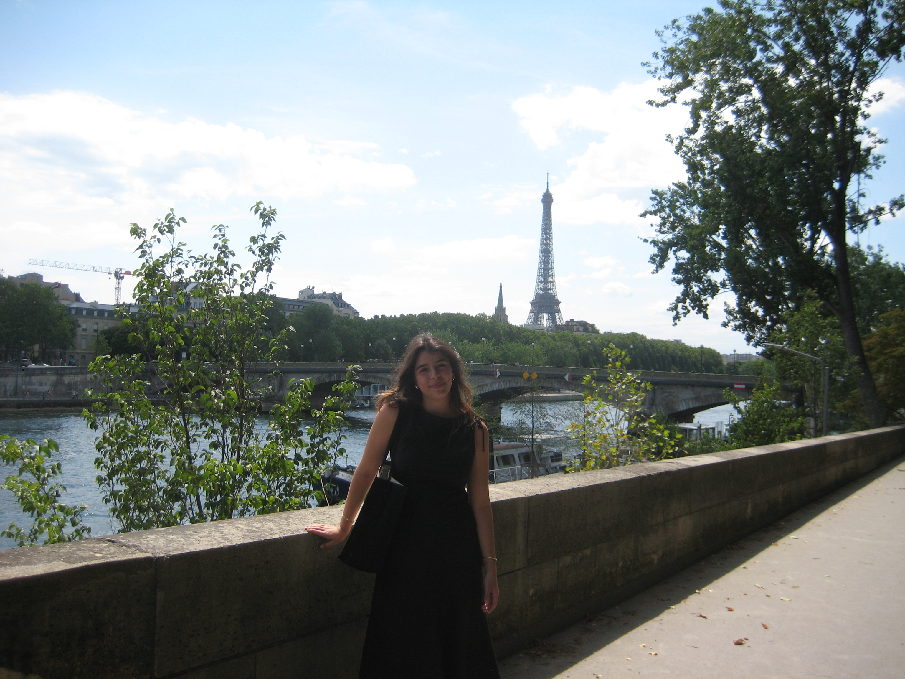

Hi! I'm Elizabeth. I love
Thank you so much for visiting my personal website. The best way to learn about me is via LinkedIn.
If you need to reach me, email me at esg2179@barnard.edu
I'm a junior at Barnard College majoring in Computer Science. I'm currently looking for a SWE/Robotics internship for Summer 2027.